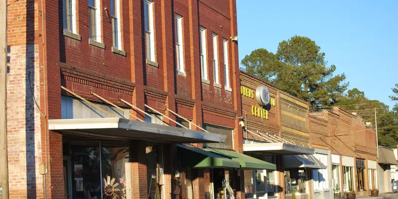

Pine Straw & Oak Leaves, Gone
We hand-clear the packed straw and leaves Fountain's trees drop, right down to a clean, free-flowing trough.
Fountain's pines and oaks fill gutters with straw and leaves until they overflow. We clear the troughs and downspouts by hand so water goes where it should — away from your foundation.

Fill out the form below and we'll get back to you within 24 hours
Between the pine straw and the oak leaves that come down around Fountain, gutters clog fast — and clogged gutters are how you end up with water spilling over the edge, rotting fascia boards, and pooling against the foundation. Out here the wind off the open farmland drops plenty of debris up top, too. Carolina Cleaning Boys clears the whole system by hand: we pull the packed straw and leaves out of the troughs, flush the downspouts until they run free, and make sure water actually flows to the ground and away from the house. Student-owned and based in nearby Greenville, we treat a job in a town this small like a neighbor's — bag the debris, leave the yard clean. 100% satisfaction guaranteed.
We hand-clear the packed straw and leaves Fountain's trees drop, right down to a clean, free-flowing trough.
Clearing gutters isn't enough — we flush every downspout so water drains to the ground and away from your foundation.
We bag what we pull out and leave your yard the way we found it — the way you'd want a neighbor to do it.
Gutter Cleaning questions from Fountain residents
Twice a year is the baseline — once after spring pollen and once in late fall when the oak leaves finish dropping. But around Fountain, homes shaded by pines and oaks, or catching debris off the open farmland, often need a clearing every few months to stay ahead of clogs.
Packed pine straw and leaves dam up the water, so instead of flowing to the downspouts it spills over the edge. That overflow rots your fascia boards, streaks the siding, and pools against the foundation — the kind of slow water damage that gets expensive long before you notice it.
Both. Clearing the troughs doesn't help if the downspouts are packed, so we flush every downspout until it runs free and confirm the water actually drains to the ground and away from the house. A clogged downspout is one of the most common reasons a 'clean' gutter still overflows.
Always. We bag the pine straw and leaves we pull out of the gutters and leave your yard the way we found it. In a town Fountain's size we treat a job like it's a neighbor's place — because more often than not, it is.
"Aw some guys, had them come out and soft wash my house and it has never looked better. They also cleaned my driveway and it looks brand new! Definitely reccomend!"
"Super respectful and enthusiastic group of boys. They cleaned my house driveway and gutters, and they have never looked so clean before. I will be referring them to the neighbors!"
"This is a great local company. Communication was prompt and they followed through in a courteous, professional manner. The price was very fair and the work was excellent, thorough and effective. I will gladly recommend them to others."
Join hundreds of satisfied customers in Pitt County. Get your free quote today!